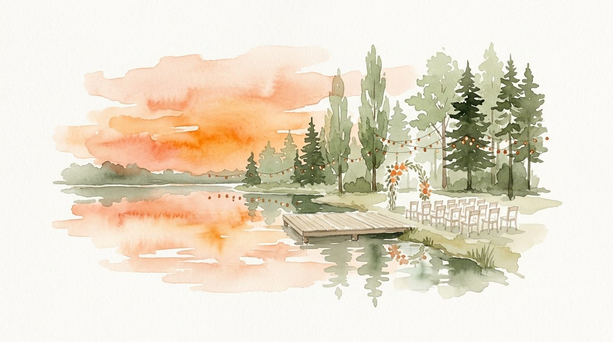

Está sobre la Ruta 15. El último tramo es de tierra, así que salí con tiempo.

Tomás la Ruta Provincial 15 (Avenida Montevideo) y doblás en Calle 77. Seguís hasta el final, doblás a la derecha, y la tranquera queda a mano izquierda. Entrás, estacionás, y la ceremonia es sobre el pico que entra al lago.
PUNTOS del
código y se ajustan cuando esté la acuarela final.